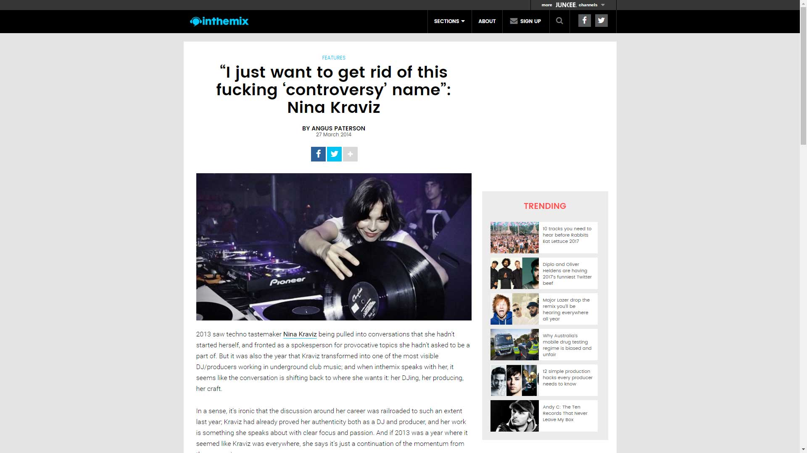

Nina Kraviz Talks Feminism, Techno and Facing Down Industry Sexism
{kind=link}

2013 saw techno tastemaker Nina Kraviz being pulled into conversations that she hadn’t started herself, and fronted as a spokesperson for provocative topics she hadn’t asked to be a part of. But it was also the year that Kraviz transformed into one of the most visible DJ/producers working in underground club music; and when inthemix speaks with her, it seems like the conversation is shifting back to where she wants it: her DJing, her producing, her craft.
In a sense, it’s ironic that the discussion around her career was railroaded to such an extent last year; Kraviz had already proved her authenticity both as a DJ and producer, and her work is something she speaks about with clear focus and passion. And if 2013 was a year where it seemed like Kraviz was everywhere, she says it’s just a continuation of the momentum from the years prior.
{kind=link}
“It has been like this since, like, two years now,” Kraviz told inthemix in Amsterdam late last year. “The year before this was particularly busy because I was doing my album thing, and now it’s like, more and more and more. So while travelling, it’s very intense. I’m definitely one of the most busy girls at the moment.”
The remainder of the year was a similar whirlwind of gigs that saw her whipping across several continents; joining the line-up of events like I Love Techno in Belgium and Warehouse Project in Manchester, and DJing at a cavalcade of iconic international clubs that included Amnesia in Milan, Output in New York City and Berghain in Berlin, just to get started.
“And don’t forget, I’m record digging,” she says. For Kraviz, it’s the sign of a true DJ enthusiast; a willingness to go beyond the convenience of mass digital promos and still go digging for vinyl, for those special gems you find at the back of a record store. Her obsessive trainspotting stretches all the way back to her teens in the mid-90s, listening to dance radio broadcast from Moscow to her home in the isolated city of Irkutsk in Siberia; and you’ll hear it in the quirky, obscure and often unexpected selections that make it into her DJ sets.
“Some DJs don’t go to record stores anymore, and they do everything digitally. But I like going to record stores, and I’m always travelling with shitloads of vinyl. That gives me another thing that absorbs my time…but it is a great place to be, digging through back catalogues.”
2012 was the year that really solidified Kraviz’s stardom, thanks to the warm welcome given to her self-titled Nina Kraviz album. It showed her equal affinity for the lush, ethereal flourishes that opened the album on Into The Night, through to the more straightforward soulful dancefloor cuts like Choices and Love Or Go as the album progressed. One constant was her own seductive vocals, adding a distinctive touch. Though the album took the limelight in 2012, the year that followed was one that showcased Nina Kraviz as a DJ.
“The past year, I didn’t really have much time for producing. When I hear something, and I feel something, the best thing for me to do is go lock myself in the studio, but sometimes the travel makes that really difficult. But this year I did some interesting collaborations, and I still managed to do some remixes, to still keep things ticking over. And I force myself to be closer to the machines. It keeps me inspired and creative. Otherwise, if it’s just always travel, travel, travel…”
It often seems like DJ/producers have to choose one or the other: either being prolific in the studio or touring regularly. “That is true,” Kraviz agrees. “But I would say that I would try to prove it wrong. When you do something you love as a routine like that, and you don’t have a recharge, then you don’t have the inspiration anymore…you don’t have a source. Like I said, I am very focused on travelling a lot, but I understand without record digging, I’m not an interesting DJ anymore; for myself, to begin with. With this amount of gigs, I need 100 records at the most, nice records. It pushes a lot of boundaries in terms of time. But I cannot go somewhere when I’m not inspired.
“And it’s the same with producing. What I realised for myself is that I have to be in the studio. Luckily I’ve found the right balance so far… For me it’s a lot of work, but it is a nice thing, it is nice work and it’s all connected. Music, DJing, record digging and dancing, everything is connected.”
Early in her career, Kraviz had a stint as the frontwoman and singer of Moscow-based band MySpaceRocket. After splitting from the group she distanced herself from being thought of as a singer, but she still carries the legit charisma of a frontman., bringing plenty of showmanship and energy to shows.
“I think this is most important thing for a DJ,” Kraviz says, when examples like Sven Vath and Carl Cox are mentioned. “People might always say, ‘okay, this guy is such a great DJ, he plays the best music. But he is not popular. This guy, his music is less interesting, but he is more popular, what the fuck?’ Excuse me, but people forget that being a DJ is being a performer. If you just get together with your friends play some records, aren’t you a DJ? Does the ability to mix some tracks together make a DJ?
“I was always questioning this. So I think the main thing about a DJ is the personality behind them. Their knowledge, of course, and skill, personality: but all this needs to be glued together. Then the outcome is good – it’s a strong person who can drive people’s attention, who is able to…” she motions with her hands to indicate a swell of energy.
“Some people can do it, some people cannot. Some people can be in public, some people cannot. The energy needs to be there, and you need to take people on a journey. With me, sometimes it happens and sometimes it doesn’t. Sometimes I play, play, play for hours, and nothing happens. Sometimes I play just for a second, and then [claps hands] there is a magic. And you can be in your mind for five or six hours and just keep playing, you play and just follow. This is the magic about DJing. It’s a magic that nobody can really predict. You have to, of course, be the boss and have the audience trust you. And then once you are together, you don’t need to show power anymore. The energy just flows. You’re smiling.”
While Kraviz might have spent the majority of 2013 touring, she still managed to drop a tidy collection of original work in the closing months with her Mr Jones EP featuring six new cuts, this time with a focus on the dancefloor. Desire is a trippy 12-minute slice of club darkness that amps up her vocals for maximum hypnotic effect, while they’re muted into indecipherable mutterings on the droning, cavernous techno of Remember. Meanwhile, Black White takes it down a notch for some warmer deep house melodies; all up, it was an impressive studio offering to round out the year. And consistent with the experimental tendencies of her label boss Radio Slave and his Rekids stable, which has released her music since 2009, the records fall on the abstract side of techno: none of it conventional, predictable or factory-line club music.